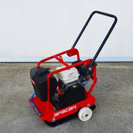

Afacan Kompaktör (Zemin Sıkıştırma Makinesi) 6HP
Diğer Ekipmanlar
Şantiye tipi zemin sıkıştırma uygulamalarında güvenilir performans. 6 HP Honda benzinli motor, plastik su haznesi ve mekanik titreşim sistemi ile kompakt ve verimli çalışma sunar.
Teknik Özellikler
- Motor: 6 HP Honda benzinli
- Yakıt: Benzinli (sarfiyat ≈ 3.5 L/saat)
- Titreşim Sistemi: Mekanik
- Su Haznesi: Plastik
- Ağırlık: 120 kg
- İlerleme: Manuel
Fiyat Bilgisi İçin:
Ürün Avantajları
Hızlı Teslimat
Düşük Bakım
2 Yıl Garanti
7/24 Destek
Afacan 6HP Kompaktör - Şantiye Güvenilirliği
Kompakt gövde ve mekanik titreşim sistemi ile homojen zemin sıkıştırma sağlar. Plastik su haznesi toz kontrolünü kolaylaştırır, Honda benzinli motor ise yüksek güvenilirlik sunar.
Öne Çıkanlar:
- Honda Motor: Güvenilir 6 HP güç
- Toz Kontrol: Entegre su haznesi
- Dayanıklı Şasi: Şantiye koşullarına uygun
- Kolay Kullanım: Manuel ilerleme, basit kontrol
Teknik Tablo - Afacan Kompaktör
| Model | Afacan Kompaktör 6HP |
| Motor | Honda 6 HP |
| Yakıt | Benzinli (≈3.5 L/saat) |
| Titreşim | Mekanik sistem |
| Su Haznesi | Plastik |
| Ağırlık | 120 kg |
| İlerleme | Manuel |
| Belgeler | CE |
Garanti ve Servis
2 Yıl Garanti
Motor ve mekanik sistem dahil
Kurulum & Eğitim
Başlangıç kullanımı eğitimi
7/24 Destek
Telefon ve WhatsApp teknik destek
Benzer Ürünler

Afacan 22MM Kesme
Şantiye tipi kesme

Afacan R20 Bükme
20mm bükme kapasitesi